Привет всем читателям Habrahabr, в этой статье я хочу поделиться с Вами моим опытом в изучении нейронных сетей.
Мое знакомство с нейронными сетями произошло, когда вышло приложение Prisma. Оно обрабатывает любую фотографию, с помощью нейронных сетей, и воспроизводит ее с нуля, используя выбранный стиль. Заинтересовавшись этим, я бросился искать статьи и «туториалы», в первую очередь, на Хабре. И к моему великому удивлению, я не нашел ни одну статью, которая четко и поэтапно расписывала алгоритм работы нейронных сетей. Информация была разрознена и в ней отсутствовали ключевые моменты. Также, большинство авторов бросается показывать код на том или ином языке программирования, не прибегая к детальным объяснениям.
Поэтому сейчас, когда я достаточно хорошо освоил нейронные сети и нашел огромное количество информации с разных иностранных порталов, я хотел бы поделиться этим с людьми в серии публикаций, где я соберу всю информацию, которая потребуется вам, если вы только начинаете знакомство с нейронными сетями. В этой статье, я не буду делать сильный акцент на Java и буду объяснять все на примерах, чтобы вы сами смогли перенести это на любой, нужный вам язык программирования. В последующих статьях, я расскажу о своем приложении, написанном под андроид, которое предсказывает движение акций или валюты. Иными словами, всех желающих окунуться в мир нейронных сетей и жаждущих простого и доступного изложения информации или просто тех, кто что-то не понял и хочет подтянуть, добро пожаловать под кат.
Первым и самым важным моим открытием был плейлист американского программиста Джеффа Хитона, в котором он подробно и наглядно разбирает принципы работы нейронных сетей и их классификации. После просмотра этого плейлиста, я решил создать свою нейронную сеть, начав с самого простого примера. Вам наверняка известно, что когда ты только начинаешь учить новый язык, первой твоей программой будет Hello World. Это своего рода традиция. В мире машинного обучения тоже есть свой Hello world и это нейросеть решающая проблему исключающего или(XOR). Таблица исключающего или выглядит следующим образом:
|
a |
b |
c |
|
0 |
0 |
0 |
|
0 |
1 |
1 |
|
1 |
0 |
1 |
|
1 |
1 |
0 |
Соответственно, нейронная сеть берет на вход два числа и должна на выходе дать другое число — ответ. Теперь о самих нейронных сетях.
Что такое нейронная сеть?
Нейронная сеть — это последовательность нейронов, соединенных между собой синапсами. Структура нейронной сети пришла в мир программирования прямиком из биологии. Благодаря такой структуре, машина обретает способность анализировать и даже запоминать различную информацию. Нейронные сети также способны не только анализировать входящую информацию, но и воспроизводить ее из своей памяти. Заинтересовавшимся обязательно к просмотру 2 видео из TED Talks: Видео 1, Видео 2). Другими словами, нейросеть это машинная интерпретация мозга человека, в котором находятся миллионы нейронов передающих информацию в виде электрических импульсов.
Какие бывают нейронные сети?
Пока что мы будем рассматривать примеры на самом базовом типе нейронных сетей — это сеть прямого распространения (далее СПР). Также в последующих статьях я введу больше понятий и расскажу вам о рекуррентных нейронных сетях. СПР как вытекает из названия это сеть с последовательным соединением нейронных слоев, в ней информация всегда идет только в одном направлении.
Для чего нужны нейронные сети?
Нейронные сети используются для решения сложных задач, которые требуют аналитических вычислений подобных тем, что делает человеческий мозг. Самыми распространенными применениями нейронных сетей является:
Классификация — распределение данных по параметрам. Например, на вход дается набор людей и нужно решить, кому из них давать кредит, а кому нет. Эту работу может сделать нейронная сеть, анализируя такую информацию как: возраст, платежеспособность, кредитная история и тд.
Предсказание — возможность предсказывать следующий шаг. Например, рост или падение акций, основываясь на ситуации на фондовом рынке.
Распознавание — в настоящее время, самое широкое применение нейронных сетей. Используется в Google, когда вы ищете фото или в камерах телефонов, когда оно определяет положение вашего лица и выделяет его и многое другое.
Теперь, чтобы понять, как же работают нейронные сети, давайте взглянем на ее составляющие и их параметры.
Что такое нейрон?
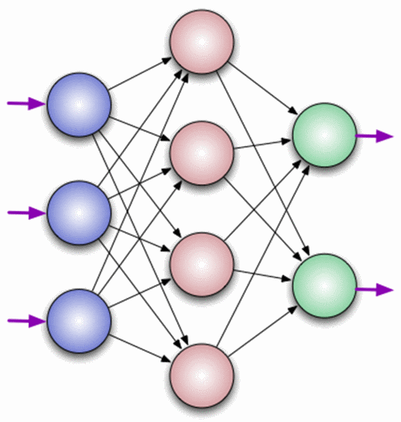
Нейрон — это вычислительная единица, которая получает информацию, производит над ней простые вычисления и передает ее дальше. Они делятся на три основных типа: входной (синий), скрытый (красный) и выходной (зеленый). Также есть нейрон смещения и контекстный нейрон о которых мы поговорим в следующей статье. В том случае, когда нейросеть состоит из большого количества нейронов, вводят термин слоя. Соответственно, есть входной слой, который получает информацию, n скрытых слоев (обычно их не больше 3), которые ее обрабатывают и выходной слой, который выводит результат. У каждого из нейронов есть 2 основных параметра: входные данные (input data) и выходные данные (output data). В случае входного нейрона: input=output. В остальных, в поле input попадает суммарная информация всех нейронов с предыдущего слоя, после чего, она нормализуется, с помощью функции активации (пока что просто представим ее f(x)) и попадает в поле output.
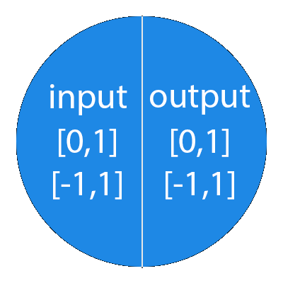
Важно помнить, что нейроны оперируют числами в диапазоне [0,1] или [-1,1]. А как же, вы спросите, тогда обрабатывать числа, которые выходят из данного диапазона? На данном этапе, самый простой ответ — это разделить 1 на это число. Этот процесс называется нормализацией, и он очень часто используется в нейронных сетях. Подробнее об этом чуть позже.
Что такое синапс?
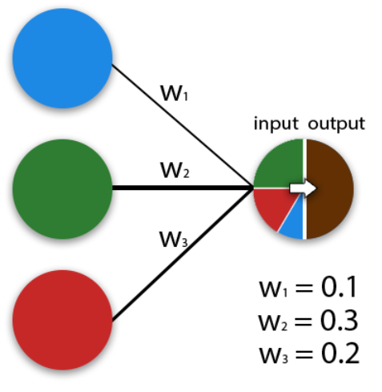
Синапс это связь между двумя нейронами. У синапсов есть 1 параметр — вес. Благодаря ему, входная информация изменяется, когда передается от одного нейрона к другому. Допустим, есть 3 нейрона, которые передают информацию следующему. Тогда у нас есть 3 веса, соответствующие каждому из этих нейронов. У того нейрона, у которого вес будет больше, та информация и будет доминирующей в следующем нейроне (пример — смешение цветов). На самом деле, совокупность весов нейронной сети или матрица весов — это своеобразный мозг всей системы. Именно благодаря этим весам, входная информация обрабатывается и превращается в результат.
Важно помнить, что во время инициализации нейронной сети, веса расставляются в случайном порядке.
Как работает нейронная сеть?
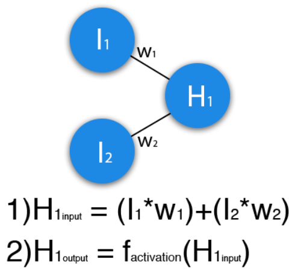
В данном примере изображена часть нейронной сети, где буквами I обозначены входные нейроны, буквой H — скрытый нейрон, а буквой w — веса. Из формулы видно, что входная информация — это сумма всех входных данных, умноженных на соответствующие им веса. Тогда дадим на вход 1 и 0. Пусть w1=0.4 и w2 = 0.7 Входные данные нейрона Н1 будут следующими: 1*0.4+0*0.7=0.4. Теперь когда у нас есть входные данные, мы можем получить выходные данные, подставив входное значение в функцию активации (подробнее о ней далее). Теперь, когда у нас есть выходные данные, мы передаем их дальше. И так, мы повторяем для всех слоев, пока не дойдем до выходного нейрона. Запустив такую сеть в первый раз мы увидим, что ответ далек от правильно, потому что сеть не натренирована. Чтобы улучшить результаты мы будем ее тренировать. Но прежде чем узнать как это делать, давайте введем несколько терминов и свойств нейронной сети.
Функция активации
Функция активации — это способ нормализации входных данных (мы уже говорили об этом ранее). То есть, если на входе у вас будет большое число, пропустив его через функцию активации, вы получите выход в нужном вам диапазоне. Функций активации достаточно много поэтому мы рассмотрим самые основные: Линейная, Сигмоид (Логистическая) и Гиперболический тангенс. Главные их отличия — это диапазон значений.
Линейная функция
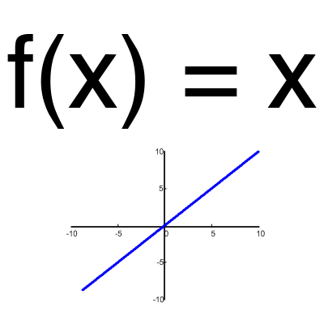
Эта функция почти никогда не используется, за исключением случаев, когда нужно протестировать нейронную сеть или передать значение без преобразований.
Сигмоид
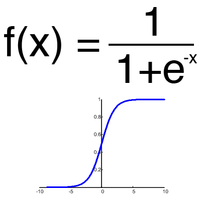
Это самая распространенная функция активации, ее диапазон значений [0,1]. Именно на ней показано большинство примеров в сети, также ее иногда называют логистической функцией. Соответственно, если в вашем случае присутствуют отрицательные значения (например, акции могут идти не только вверх, но и вниз), то вам понадобиться функция которая захватывает и отрицательные значения.
Гиперболический тангенс
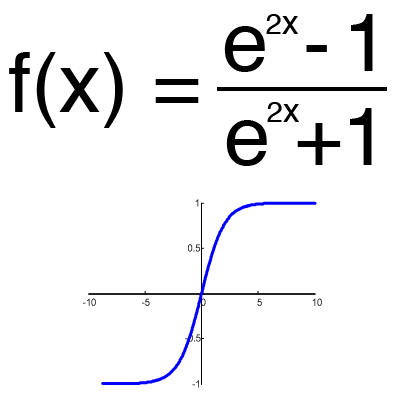
Имеет смысл использовать гиперболический тангенс, только тогда, когда ваши значения могут быть и отрицательными, и положительными, так как диапазон функции [-1,1]. Использовать эту функцию только с положительными значениями нецелесообразно так как это значительно ухудшит результаты вашей нейросети.
Тренировочный сет
Тренировочный сет — это последовательность данных, которыми оперирует нейронная сеть. В нашем случае исключающего или (xor) у нас всего 4 разных исхода то есть у нас будет 4 тренировочных сета: 0xor0=0, 0xor1=1, 1xor0=1,1xor1=0.
Итерация
Это своеобразный счетчик, который увеличивается каждый раз, когда нейронная сеть проходит один тренировочный сет. Другими словами, это общее количество тренировочных сетов пройденных нейронной сетью.
Эпоха
При инициализации нейронной сети эта величина устанавливается в 0 и имеет потолок, задаваемый вручную. Чем больше эпоха, тем лучше натренирована сеть и соответственно, ее результат. Эпоха увеличивается каждый раз, когда мы проходим весь набор тренировочных сетов, в нашем случае, 4 сетов или 4 итераций.
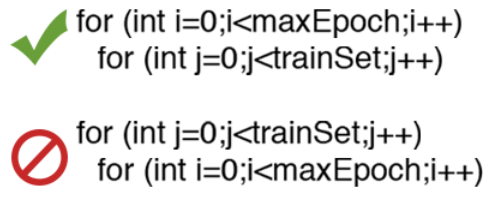
Важно не путать итерацию с эпохой и понимать последовательность их инкремента. Сначала n раз увеличивается итерация, а потом уже эпоха и никак не наоборот. Другими словами, нельзя сначала тренировать нейросеть только на одном сете, потом на другом и тд. Нужно тренировать каждый сет один раз за эпоху. Так, вы сможете избежать ошибок в вычислениях.
Ошибка
Ошибка — это процентная величина, отражающая расхождение между ожидаемым и полученным ответами. Ошибка формируется каждую эпоху и должна идти на спад. Если этого не происходит, значит, вы что-то делаете не так. Ошибку можно вычислить разными путями, но мы рассмотрим лишь три основных способа: Mean Squared Error (далее MSE), Root MSE и Arctan. Здесь нет какого-либо ограничения на использование, как в функции активации, и вы вольны выбрать любой метод, который будет приносить вам наилучший результат. Стоит лишь учитывать, что каждый метод считает ошибки по разному. У Arctan, ошибка, почти всегда, будет больше, так как он работает по принципу: чем больше разница, тем больше ошибка. У Root MSE будет наименьшая ошибка, поэтому, чаще всего, используют MSE, которая сохраняет баланс в вычислении ошибки.
MSE
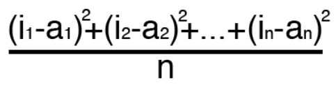
Root MSE
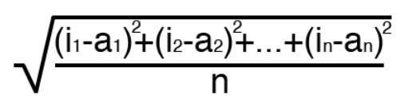
Arctan
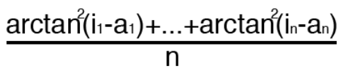
Принцип подсчета ошибки во всех случаях одинаков. За каждый сет, мы считаем ошибку, отняв от идеального ответа, полученный. Далее, либо возводим в квадрат, либо вычисляем квадратный тангенс из этой разности, после чего полученное число делим на количество сетов.
Задача
Теперь, чтобы проверить себя, подсчитайте результат, данной нейронной сети, используя сигмоид, и ее ошибку, используя MSE.
Данные:
I1=1, I2=0, w1=0.45, w2=0.78 ,w3=-0.12 ,w4=0.13 ,w5=1.5 ,w6=-2.3.
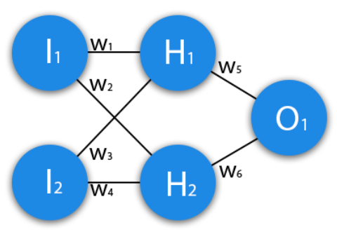
Решение
H1input = 1*0.45+0*-0.12=0.45
H1output = sigmoid(0.45)=0.61
H2input = 1*0.78+0*0.13=0.78
H2output = sigmoid(0.78)=0.69
O1input = 0.61*1.5+0.69*-2.3=-0.672
O1output = sigmoid(-0.672)=0.33
O1ideal = 1 (0xor1=1)
Error = ((1-0.33)^2)/1=0.45
Результат — 0.33, ошибка — 45%.
Большое спасибо за внимание! Надеюсь, что данная статья смогла помочь вам в изучении нейронных сетей. В следующей статье, я расскажу о нейронах смещения и о том, как тренировать нейронную сеть, используя метод обратного распространения и градиентного спуска.
Использованные ресурсы:
— Раз
— Два
— Три